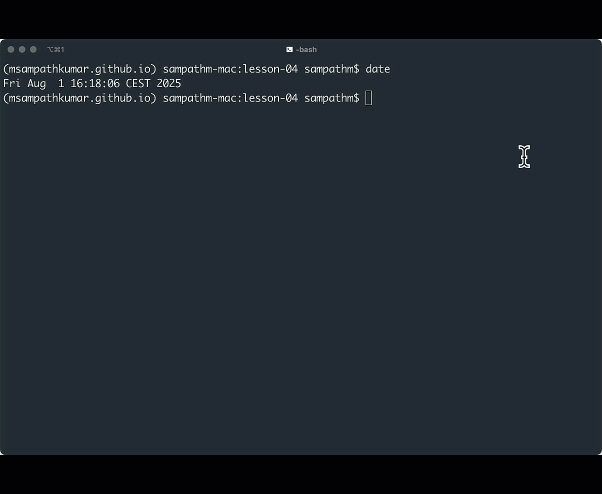

Cookbook Lesson 04: 🔓 Unlock Enterprise AI: Grounding Gemini with RAG and Google Cloud Search 🚀
Welcome back! 👋 In Lesson 03, we built fast, relevant chatbots using direct context methods like In-Context Learning ✨, System Instructions 📜, and Context Caching 📦. Those are fantastic for quick demos and consistent persona. But what if your chatbot needs to know the latest company sales figures, details from an obscure internal report, or specific client history? That's where Large Language Models (LLMs) hit their limit – they hallucinate! 😵💫
Today, we tackle the next frontier: Grounding your Gemini models in real-time, external, and even proprietary data using Retrieval Augmented Generation (RAG), with Google Cloud Search as your powerful engine. 🔍
This lesson is part of the 5 part series Google Cloud - Gemini Cookbook (GitHub Link).
1. Grounding LLMs: Combating Hallucinations with External Knowledge 🛡️
LLMs are brilliant pattern matchers, trained on vast amounts of internet data. However, their knowledge is frozen at their last training cut-off date. They don't have real-time access to the internet, nor do they inherently know your company's internal documents, recent sales data, or specific client interactions. When asked about such information, they might:
- Refuse to answer: "I don't have information on that." 🤷♀️
- Generate generic or outdated information: "According to general industry trends..." 🗓️
- "Hallucinate": Make up plausible-sounding but entirely false information. This is the most dangerous! 🚨
Example: A Chatbot Hallucinating on Project Status
Let's revisit our chatbot. If you ask about specific, latest information:
User: What is the status of our CRM project - Alpha?
Model: I'm sorry, but I don't have access to specific project details like the status of your CRM project Alpha. 😟 I can only provide general information.
User: What is today's date ?
Model: Today's date is June 16, 2024. 📅
This is a problem. In enterprise settings, accuracy is paramount. We need a way to connect Gemini to our actual, verifiable knowledge. This is called grounding. 🌱
2. Introduction to Retrieval Augmented Generation (RAG): Your LLM's Research Assistant 🧑🎓
Retrieval Augmented Generation (RAG) is an architectural pattern that solves the hallucination problem by giving LLMs access to external, up-to-date, and domain-specific information.
Think of RAG as giving your LLM a brilliant research assistant: 🧐
- Retrieve: When you ask a question, the "research assistant" first searches a vast library (your knowledge base) for relevant documents or snippets. 📚
- Augment: It then takes the most relevant findings and gives them to the LLM. 🧩
- Generate: Finally, the LLM uses this specific, retrieved information (along with your original query) to formulate an accurate and grounded response. ✅
Key Components of a RAG System:
- Knowledge Base: Your source of truth – internal documents, databases, websites, etc. 📁
- Retriever: A system (like a vector database combined with an embedding model, or a powerful search engine like Google Cloud Search) that can quickly find the most relevant pieces of information from your knowledge base based on a query. 🔎
- Generator: The LLM (Gemini) that synthesizes the answer using the retrieved context. 🧠
Benefits of RAG:
- Factuality: Grounding responses in real data dramatically reduces hallucinations. ✅
- Currency: LLMs can answer questions about information that wasn't in their training data or is constantly changing. ⏰
- Domain-Specific Knowledge: Access to proprietary or niche topics. 💼
- Attribution: Potential to show users where the information came from (e.g., "Source: Policy Manual v2.1"). 🔗
RAG vs. Context Cache: A Crucial Distinction 🚨
It's vital to differentiate RAG from Context Caching (Lesson 03).
- Context Cache: Reuses small, static pieces of pre-loaded or conversational context. It's about efficiency for fixed data, avoiding redundant token usage. Think of it as a persistent "sticky note" or short-term memory for repeated instructions or small data blocks. 📝
- RAG: Dynamically retrieves specific, often large, and always relevant chunks of information from a vast, external knowledge base on demand for each query. It's about expanding the LLM's factual knowledge with new, current, or private data. 🌐
3. Application Architecture
This application is designed to be a flexible and extensible chatbot that can leverage different grounding techniques. Here's a breakdown of the core components:
Core Application Logic:
streamlit_app.py(UI): This is the user-facing component of the application, built with Streamlit. It provides the chat interface, handles user input, and displays the LLM's responses. It's the "skin" of our application.llm.py(The Brain): This module is the central nervous system of our chatbot. It's responsible for all interactions with the Gemini API. It takes the user's prompt, and based on the selected mode (Default, Context Cache, or RAG), it constructs the appropriate request to the Gemini model.cache.py(Optional Battery): This module manages the Context Cache. When the "Use Context Cache" option is selected,llm.pyuses this module to create and manage a cache of context, which can be reused across conversations to improve speed and reduce costs.rag.py(Optional Battery): This module handles the Retrieval-Augmented Generation (RAG) functionality. When the "Use RAG as Tool" option is selected,llm.pyuses this module to create and manage a RAG corpus. This allows the LLM to retrieve information from a knowledge base to answer questions.
Code Links:
4. RAG Implementation Flow
Here’s a more detailed look at how the RAG process works within our application when the "Use RAG as Tool" option is enabled:
5. Application Screenshots

Youtube: https://youtu.be/JIx4Fr4V6Mw
Conclusion
This lesson demonstrated how to ground Gemini models with external knowledge using RAG. By leveraging RAG, we can build more accurate, factual, and useful AI applications that can reason about private and real-time data.